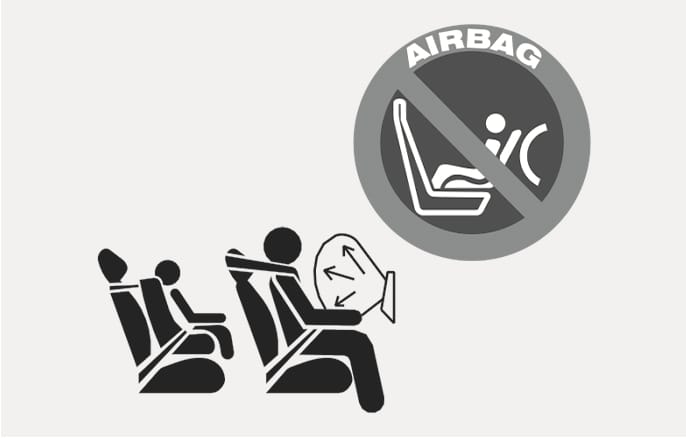

에어백 관련 주의사항
에어백 작동과 관련해, 다음 주의사항을 확인하십시오.
-
에어백이 장착되어 있더라도 반드시 안전벨트를 착용하십시오. 에어백은 안전벨트를 보조하는 안전장치입니다.
-
안전벨트를 착용하지 않거나 탑승 자세가 바르지 않으면 사고 시 에어백이 정상적인 보호 기능을 제공할 수 없어 심각한 부상을 입거나 사망할 수 있습니다. 또한, 순간적인 에어백의 팽창이나 2차 충돌로 인해 추가적인 부상을 입을 수 있습니다.
-
에어백 전개 시 어린이가 심하게 다치거나 사망할 수 있습니다. 어린이에게는 동승석보다 뒷좌석이 안전합니다.
-
항상 안전벨트를 착용하고, 어린이 보호 좌석은 뒷좌석에 설치하십시오. 동승석에는 어린이 보조좌석을 절대로 설치하지 마십시오.
-
에어백이 팽창할 때 안면이나 신체 일부에 화상이나 찰과상을 입을 수 있으며, 안경이 파손되며 부상을 입을 수도 있습니다.
-
에어백 작동으로 인한 부상 위험을 줄이려면 에어백과 탑승자 사이에 어떤 물건도 놓아두지 마십시오.
-
운전석 에어백과 동승석 에어백은 정면 충돌 시 에어백 작동 조건이 만족되는 경우에만 작동하며, 가벼운 전방 충돌, 측면 및 후방 충돌이 발생하거나 기둥 등에 충돌하는 경우에는 작동하지 않습니다.
-
사이드 에어백, 커튼 에어백은 강한 측면 충돌이 발생한 경우에만 작동합니다.
-
에어백은 다중 충돌 시의 후방 충격으로부터 탑승자를 보호할 수 없습니다.
-
좌석을 개조하지 마십시오. 현대자동차가 허용하지 않은 좌석을 장착하거나 시트 커버를 개조하는 경우 에어백 성능이 감소해 부상 위험이 높아질 수 있습니다.
-
에어백 장착부나 충돌 센서 장착부에 충격을 가하지 마십시오. 에어백 기능이 손상되거나 오작동할 수 있습니다.
-
카펫이 젖었거나 차량 바닥에 물이 차오르는 등 차량이 침수된 경우 시동 버튼을 누르지 말고 차량을 당사 직영 하이테크센터나 블루핸즈로 견인한 후 점검을 요청하십시오. 에어백에 근접한 상태에서 에어백이 갑자기 팽창하는 경우 운전자 또는 탑승자가 심각한 부상을 입거나 사망할 수 있습니다.
-
품질이나 성능이 부적합한 범퍼 가드 장착 또는 범퍼 교체 시 충돌 성능 및 에어백 작동에 좋지 않은 영향을 끼칠 수 있습니다. 순정 부품 범퍼 가드/범퍼는 품질과 성능을 당사가 보증하는 부품입니다.
-
차량에 내장된 부품을 임의로 분해하고 조립하는 경우 부품이 훼손되거나 변형되어 정상적으로 설치되지 않을 수 있습니다. 이런 경우, 에어백 작동 시 부품이 떨어져 나와 탑승자에게 부상을 입힐 수 있습니다.
에어백은 강한 힘으로 빠르게 팽창하므로, 에어백 작동 시 안면 찰과상, 타박상, 골절과 같은 상해가 발생할 수 있습니다. 또한, 운전자와 스티어링 휠 사이의 거리가 지나치게 가까운 경우, 에어백 작동 시 치명적인 부상을 입을 수 있습니다.
-
운전에 방해가 되지 않는 범위 내에서 스티어링 휠로부터 최대한 멀리 떨어져 앉으십시오.
-
동승석 탑승자가 가급적 좌석을 뒤로 밀고 바른 자세로 착석하도록 하십시오.
-
에어백이 작동할 때, 스티어링 휠과 크래시 패드의 에어백 관련 부품이 매우 뜨겁습니다. 화상을 입지 않도록 에어백이 작동한 직후 내장 부분을 만지지 마십시오.
-
팽창한 에어백과의 충돌로 인해 타박상, 찰과상 및 안경 파손 등의 2차 피해가 발생할 수 있으므로 주의하십시오.
-
에어백 작동 시 내부에 장착된 화약이 폭발하며 순간적으로 에어백이 펼쳐지므로, 소음, 섬광, 연기 및 화상이 발생할 수 있습니다. 에어백 작동 후 차량 내부에 백색 가루가 남겨지는 것은 정상적인 현상입니다.
-
에어백 작동 후 창문이나 도어를 열고 차량 내부를 환기하십시오. 에어백 작동 후 발생한 연기, 가루 및 안전벨트와 에어백의 압박으로 인해 호흡 곤란이 발생할 수 있습니다.
-
에어백 작동 시 발생하는 연기와 가루에는 독성이 없지만 피부 자극을 유발할 수 있습니다. 피부가 가렵거나 따가운 경우 즉시 차가운 물로 닦고, 자극이 지속되는 경우 의사와 상의해 치료하십시오.
에어백 제어 모듈은 차량의 시동이 켜져 있는 동안('ON') 모든 에어백 관련 부품을 계속해서 감시하고, 충돌 발생 시 충돌 강도에 따라 에어백과 리트랙터 프리텐셔너를 작동합니다.
-
에어백은 차량의 시동이 켜져 있는 동안('ON') 및 시동을 끈 후('OFF') 약 3분 동안 작동하며, 정면 또는 측면에 강한 충격이 감지되면 순간적으로 팽창해 탑승자를 보호합니다.
-
에어백은 차량의 속도가 아닌 충돌의 강도와 방향에 따라 작동합니다.
-
에어백은 순간적으로 작동하므로, 에어백이 팽창하는 순간을 직접 관찰할 수는 없으며, 대개의 경우 에어백 작동 후 공기가 빠진 상태만 확인할 수 있습니다.
-
동승석에는 어린이 보조좌석을 절대로 설치하지 마십시오. 탑승한 어린이가 에어백 작동 시의 충격으로 인해 심하게 다치거나 사망할 수 있습니다.
-
사이드 에어백이 장착된 차량의 뒷좌석에 어린이 보조좌석을 설치할 때, 보조좌석이 도어에 직접 닿지 않도록 거리를 두고 설치하십시오. 사이드 에어백 작동 시의 충격으로 인해 탑승한 어린이가 심하게 다치거나 사망할 수 있습니다.

2C_AirbagPartsWarning
승객 구분 센서(OSC) 적용 여부에 관계없이, 동승석에는 어린이 보조좌석을 절대로 설치하지 마십시오. 동승석 에어백 작동 시 보조좌석이 적절한 위치를 벗어나거나 탑승한 어린이를 정상적으로 고정하지 못해 심각한 부상이 발생할 수 있습니다.
에어백은 탑승자 보호를 위한 중요한 안전장치이므로, 사소한 고장이 발생하는 경우에도 에어백 경고등이 켜집니다.
-
에어백이 정상적으로 작동하는 경우, 차량의 시동을 걸면('ON') 에어백 경고등이 약 3-6초 동안 켜진 후 꺼집니다.
-
다음과 같은 경우에는 에어백 관련 문제가 발생한 것이므로, 즉시 당사 직영 하이테크센터나 블루핸즈에서 차량을 점검하십시오.
-
시동을 걸었을 때 에어백 경고등이 켜지지 않거나 깜빡이는 경우, 또는 시동 시 켜진 에어백 경고등이 3-6초 이후에도 꺼지지 않고 유지되는 경우
-
주행 중 에어백 경고등이 켜지는 경우
-
에어백은 충돌 센서, 에어백 제어 모듈, 공기 주머니로 구성된 보호 장치로, 안전벨트만으로는 탑승자의 부상 위험을 충분히 줄일 수 없는 정도의 강한 충격이 감지되는 경우 안전벨트를 보조해 탑승자의 얼굴이나 상체에 가해지는 충격을 완화합니다.
에어백은 안전벨트를 대신할 수 없으며, 탑승자가 안전벨트에 고정되어 있는 경우에만 효과적인 보호 기능을 제공하므로, 보조 구속 장치(SRS, supplemental restraint system)라고 부르기도 합니다.
충돌 및 전복 사고 발생 시, 에어백은 프리텐셔너 안전벨트와 함께 작동해 보다 향상된 탑승자 보호 기능을 제공합니다.
운전석과 동승석에 장착된 어드밴스드 에어백의 특징은 다음과 같습니다.
-
충돌 강도에 따라 두 단계로 에어백을 전개합니다(중간 충격/강한 충격).
-
승객 구분 시스템이 장착되어 있어, 동승석 탑승자를 감지하고, 특정 조건을 만족하는 경우 동승석 에어백을 작동하지 않습니다.
안전벨트는 차량 충돌 시 탑승자를 에어백으로부터 보다 멀리 떨어진 위치에 고정해 에어백 팽창 시의 충격을 완화하고 보다 효과적인 보호 기능을 제공합니다.
또한, 차량 전복이나 측면 또는 후방 충돌 발생 시, 에어백 작동 조건이 충족되지 않는 경우에도 탑승자의 부상 위험을 줄이고, 탑승자가 차량으로부터 이탈하는 것을 방지합니다.